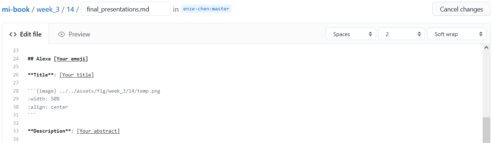
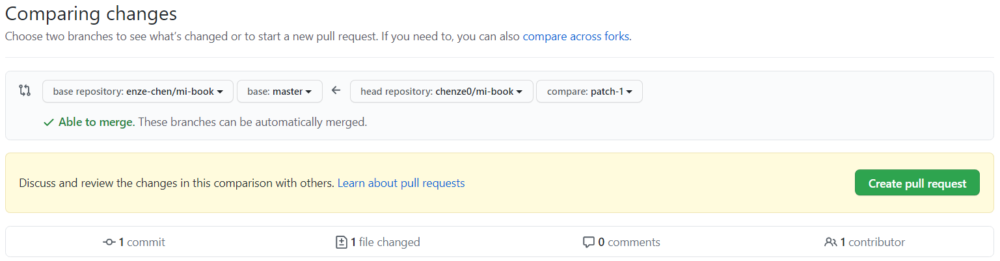
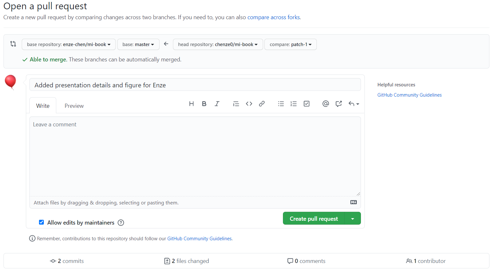

GitHub pull requests¶
In Module 1, you learned a little bit about GitHub and how it can be used to share code between developers and with the general public. More specifically, you used the command-line interface (CLI) to clone repositories (repos) to your local computing environment. In this lesson, we’ll continue the discussion and explore two more features of GitHub: the web user interface (UI) and pull requests.
Web UI¶
Chances are, you have already seen the GitHub web UI if you’ve cloned a repo before, because that’s where you will find the correct URL to clone. At the very least you will have glanced it while setting up your GitHub account for this module. (right??? 😉) In case you haven’t seen a full repo before, here is the webpage for this textbook’s repo as an example.
As you can see, the UI is fairly clean with many symbols, lots of whitespace, and light colors. This simplicity was intentionally designed to better surface repo elements and key GitHub features. Moreover, the developers of GitHub realized that in order to elevate GitHub to the next level and increase platform adoption, they had to start enabling more CLI features to be accessible through the UI. This not only improves the user experience for everyone (who doesn’t like point-and-click, drag-and-drop?), but also enables less programming-savvy users to collaborate on projects.
On the main page of this textbook’s repo, you will notice that one of the most prominent features on the right-hand side is the Contributors list. This panel lists everyone who has made at least one change to at least one file in this repo. It is sensible for this to be featured since that is one of the purposes of using GitHub and credit should be given where credit is due. However, you’ll also notice that it’s a little sad at the moment—Enze is the only contributor. 😢
But fear not! As stated on the first day, we are a team, and a team functions best when everyone contributes, so you will all soon become contributors on this wonderful team project of ours. 😍
Presentation abstract¶
Pull requests¶
In GitHub lingo, the phrase associated with a personal contribution to a project is a pull request, or PR. When you “open a PR” or “submit a PR,” what this means is that you made some changes to your personal version of a repo and you’re ready to incorporate those changes into the main, public version of that repo. The “pull” part of the name refers to the fact that the main project has to grab your changes, and the “request” part of the name refers to the fact that the maintainers of the project need to review and accept your changes before they can be incorporated (merged in GitHub lingo). PRs are used all the time on GitHub and in software engineering as it allows for individual contributions while maintaining certain consistency checks. While we cannot git into all the details at the moment 🤦, we hope you can at least appreciate why we’re teaching you this concept and now we will put these ideas into practice. Once you have made some changes, submitted a PR, and that PR gets approved, you will become a contributor on this project!
Final presentation page¶
In a different tab, navigate to this page of the textbook: Final presentations. On that page, hover over Octocat and click ✏ suggest edit.

Fork the repo¶
This will take you to a page in the web UI that looks like the following:

Since you are not a maintainer for the repo (only Enze is), you have to make a copy of the files and can only edit those copies. Making your personal copy of a repo is called a fork 🍴 in GitHub lingo, and you should click Fork this repository. This should then take you to an interface that looks like the following:
{kind=link}
Add your information¶
Now find your section on that page and add the information related to your presentation. If you don’t have the information ready, no worries. Cancel the changes for now (Enze will be periodically merging in others’ changes) and you can always come back to it later by following the same steps.
Attention
To avoid this going, ha-ha, terribly wrong (i.e., “merge conflicts” in GitHub lingo), please make sure you edit your section and your section only. Don’t touch any other lines, including adding/removing spaces!
For the emoji, title, and description, replace the entire [guiding_text] parts.
Emojipedia is a good source for selecting cross-platform emojis.
For the image, change just temp.png to the name of your own figure file, with the extension.
Your figure name has to be unique to you, so we suggest something like name_final.png (e.g., enze_final.png), provided this is what you named the actual figure (PNG) file on your computer!
We’ll upload this image to the repo shortly.
Propose changes¶

When you have completed your section, scroll to the bottom and create a short title for this set of edits that you made (see above). By naming each set of changes, we are able to reference them later, so make sure the title is sufficiently descriptive. When you are done, click Propose changes to take you to the next page where you can see the lines you’ve changed. Near the top, you should see a box that says something like compare: patch-1. Make a note of the number.
{kind=link}
Uploading your figure¶
Halfway there! You’ve updated your presentation details, which now references the figure you made, but that figure isn’t in the repo yet! Time to change that.

First, navigate to your forked repo by clicking [Your avatar] > Your repositories > mi-book, which should take you to a very similar page as the main repo, except the header has the image in the sidebar, saying “forked from enze-chen/mi-book.”

Next, find the dropdown that says master ▾ and select the name associated with the change you made earlier, which should be patch-1 or something similar.
As the surrounding text implies, these are different branches of your project, and this is an important feature when using git.
In essence, brances allow you to keep several different versions of your code (with say, different files edited/present in each one) so that different project members can independently work on different sections/features, and only merge them with the main branch (called master) when ready.
When you proposed changes with your presentation information, those changes were saved into the patch-1 branch, and so you want to add your figure to that branch as well.
Clicking the branch name will switch you to that branch.
Next, navigate by clicking on the folders to assets/fig/week_3/12 where you should only see temp.svg, temp.png, and maybe a few other figures, depending on how quickly Enze has merged other students’ PRs.
Once here, click on Add file > Upload files and choose the image from your computer (make sure it matches the name you entered in final_presentations.md).
Then enter a descriptive title for this change and click Commit changes (commit directly to the patch-1 branch).
Finally, the PR!¶

Almost there! Now you should see a yellow banner at the top with a fat Compare & pull request button. Click it!!

{kind=link}
This takes you to the PR dialogue, and you should note the following:
Make sure that at the top, you are merging the correct source branch on the right-hand side (
your_username/mi-book:patch-1or equivalent, notmaster) to the correct destination branch on the left-hand side (enze-chen/mi-book:master, notgh-pages).Write a descriptive title for your PR.
Leave the box “Allow edits by maintainers” checked ☑.
At the bottom, you can further verify that the “2 files changed” are
final_presentations.mdandname_final.png.
If everything looks good, you can click Create pull request and then ping Enze on Slack to merge your PR! Woohoo! 🎉
Submission deadline
Reminder that you should submit your PR by EOD Wednesday, 07/14.